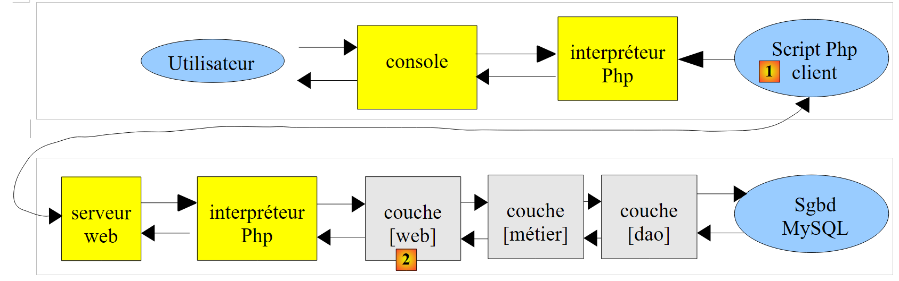
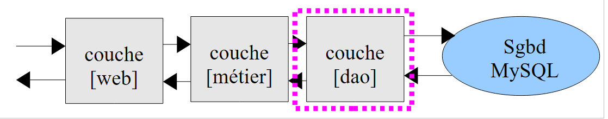

11. Cálculo de impostos: Exercício com um serviço Web e uma arquitetura de três camadas
Vamos revisitar o exercício IMPOTS (ver secções 4.2, 4.3, 6) e transformá-lo numa aplicação cliente/servidor. O script do servidor será dividido em três componentes:
- uma camada denominada [DAO] (Data Access Objects) que irá gerir as interações com a base de dados MySQL
- uma camada chamada [business] que calculará o imposto
- uma camada [web] que irá gerir a comunicação com os clientes web.
 |
O script do cliente [1]:
- envia as três informações ($married, $children, $salary) necessárias para calcular o imposto para o script do servidor
- exibe a resposta do servidor na consola
O script do servidor [2] consiste na camada [web] do servidor.
- No início de uma nova sessão do cliente, preenche os vetores com dados da base de dados MySQL [dbimpots]. Para tal, recorre à camada [DAO]. Os vetores assim construídos são colocados na sessão do cliente para que possam ser utilizados em pedidos subsequentes do cliente.
- Quando um cliente faz uma solicitação, ele passa as três informações ($married, $children, $salary) para a camada [business logic], que calculará o imposto $tax.
- O script do servidor irá devolver o imposto calculado $tax.
11.1. O script do cliente (clients_impots_05_web)
O script do cliente será um cliente do serviço web de cálculo de impostos. Enviará (POST) parâmetros para o servidor no seguinte formato:
params=$married,$children,$salary onde
- $married será a string "yes" ou "no",
- $children será o número de filhos,
- $salary é o salário do contribuinte
Recupera os três parâmetros acima de um ficheiro de texto [data.txt] no formato (casado, filhos, salário):
O script do cliente
- irá ler o ficheiro de texto [data.txt] linha a linha
- enviará a string params=$married,$children,$salary para o serviço web de cálculo de impostos
- e irá recuperar a resposta do serviço. Esta resposta pode assumir duas formas:
- guardará a resposta do servidor num ficheiro de texto [results.txt] num dos dois formatos seguintes:
O código do script do lado do cliente é o seguinte:
<?php
// tax client
// error management
ini_set("display_errors", "off");
// ---------------------------------------------------------------------------------
// a class of utility functions
class Utilitaires {
function cutNewLinechar($ligne) {
...
}
}
// main -----------------------------------------------------
// definition of constants
$DATA = "data.txt";
$RESULTATS = "resultats.txt";
// server data
$HOTE = "localhost";
$PORT = 80;
$urlServeur = "/exemples-web/impots_05_web.php";
// taxable person parameters (marital status, number of children, annual salary)
// were placed in the $DATA text file, one line for each taxpayer
// results (marital status, number of children, annual salary, tax payable)
// or (marital status, number of children, annual salary, error msg) are placed in
// the $RESULTATS text file, with one result per line
// utility class
$u = new Utilitaires();
// opening taxpayer data files
$data = fopen($DATA, "r");
if (!$data) {
print "Impossible d'ouvrir en lecture le fichier des données [$DATA]\n";
exit;
}
// open results file
$résultats = fopen($RESULTATS, "w");
if (!$résultats) {
print "Impossible de créer le fichier des résultats [$RESULTATS]\n";
exit;
}
// the current line of the taxpayer data file is used
while ($ligne = fgets($data, 100)) {
// remove any end-of-line marker
$ligne = $u->cutNewLineChar($ligne);
// we retrieve the 3 fields married:children:salary which form $ligne
list($marié, $enfants, $salaire) = explode(",", $ligne);
// tax calculation
list($erreur, $impôt) = calculerImpot($HOTE, $PORT, $urlServeur, $cookie, array($marié, $enfants, $salaire));
// enter the result
$résultat = $erreur ? "$marié:$enfants:$salaire:$erreur" : "$marié:$enfants:$salaire:$impôt";
fputs($résultats, "$résultat\n");
// following data
}
// close files
fclose($data);
fclose($résultats);
// end
print "Terminé...\n";
exit;
function calculerImpot($HOTE, $PORT, $urlServeur, &$cookie, $params) {
// connects client to ($HOTE,$PORT,$urlServeur)
// sends the $cookie cookie if it is non-empty. $cookie is passed by reference
// sends $params to the server
// exploits the single line returned by the server
// open a connection on port 80 of $HOTE
$connexion = fsockopen($HOTE, $PORT);
// mistake?
if (!$connexion)
return array("erreur lors de la connexion au serveur ($HOTE, $PORT)");
// protocol HTTP headers must end with an empty line
// POST
fputs($connexion, "POST $urlServeur HTTP/1.1\n");
// Host
fputs($connexion, "Host: localhost\n");
// Connection
fputs($connexion, "Connection: close\n");
// send cookie if non-empty
if ($cookie) {
fputs($connexion, "Cookie: $cookie\n");
}////if
// now we send the client instruction after encoding it
$infos = "params=" . urlencode(implode(",", $params));
// on indique quel type d'informations on va envoyer
fputs($connexion, "Content-type: application/x-www-form-urlencoded\n");
// send the size (number of characters) of the information to be sent
fputs($connexion, "Content-length: " . strlen($infos) . "\n");
// send an empty line
fputs($connexion, "\n");
// we send the news
fputs($connexion, $infos);
// the web server response is displayed
// and we take care to recover any cookie
while ($ligne = fgets($connexion, 1000)) {
// cookie - only on 1st response
if (!$cookie) {
if (preg_match("/^Set-Cookie: (.*?)\s*$/", $ligne, $champs)) {
$cookie = $champs[1];
}//if
}
// as soon as there is an empty line, the HTTP response is terminated
if (trim($ligne) == "") {
break;
}
}////while
// read line result
$ligne = fgets($connexion, 1000);
// close the connection
fclose($connexion);
// result calculation
$erreur="";
$impôt="";
if (preg_match("/^<erreur>(.*?)<\/erreur>\s*$/", $ligne, $champs)) {
$erreur = $champs[1];
} else {
if (preg_match("/^<impot>(.*?)<\/impot>\s*$/", $ligne, $champs)) {
$impôt = $champs[1];
}else{
$erreur="résultat du serveur non exploitable";
}
}
// return
return array($erreur, $impôt);
}
Comentários
O código do script do lado do cliente inclui elementos que já vimos anteriormente:
- linhas 9–15: a classe [Utilities] foi introduzida na Versão 3, Secção 6
- linhas 17–68: o programa principal é semelhante ao da Versão 1, Secção 4.2. Difere apenas no cálculo do imposto, linha 56.
- linha 56: a função de cálculo de impostos aceita os seguintes parâmetros:
- $HOST, $PORT, $serverURL: utilizados para se ligar ao serviço web
- $cookie: é o cookie de sessão. Este parâmetro é passado por referência. O seu valor é definido pela função de cálculo de impostos. Na primeira chamada, não tem valor. Depois disso, tem um.
- array($married, $children, $salary): representa uma linha do ficheiro [data.txt]
A função de cálculo de impostos devolve uma matriz com dois resultados ($error, $tax), em que $error é uma possível mensagem de erro e $tax é o montante do imposto.
- Linhas 70–134: Este é um cliente HTTP clássico, do tipo que já encontramos muitas vezes. Observe os seguintes pontos:
- Linha 83: Os parâmetros ($married, $children, $salary) são enviados para o servidor através de uma solicitação POST
- Linhas 89–91: Se o cliente tiver um ID de sessão, envia-o para o servidor
- linha 93: criação do parâmetro `params`
- linha 101: o parâmetro `params` é enviado
- linhas 104–115: o cliente lê todos os cabeçalhos HTTP enviados pelo servidor até encontrar a linha vazia que marca o fim dos cabeçalhos. Ele aproveita esta oportunidade para recuperar o ID de sessão da resposta à sua primeira solicitação.
- linhas 123–125: processar qualquer linha no formato <error>message</error>
- linhas 126–128: fazemos o mesmo com qualquer linha no formato <tax>amount</tax>
- linha 133: o resultado é devolvido
11.2. O serviço web de cálculo de impostos
Aqui, estamos interessados nos três scripts que compõem o servidor:
 |
O projeto NetBeans correspondente é o seguinte:
 |
Em [1], o servidor é composto pelos seguintes scripts PHP:
- [impots_05_entites] contém as classes utilizadas pelo servidor
- [impots_05_dao] contém as classes e interfaces da camada [dao]
- [impots_05_metier] contém as classes e interfaces da camada [business]
- [impots_05_web] contém as classes e interfaces da camada [dao]
Começamos por apresentar duas classes utilizadas pelas diferentes camadas do serviço web.
11.2.1. As entidades do serviço web (impots_05_entities)
A base de dados MySQL [dbimpots] possui uma tabela [impots] que contém os dados necessários para calcular o imposto [1]:
 |
Iremos armazenar os dados da tabela MySQL [impots] numa matriz de objetos Tranche, sendo que Tranche é a seguinte classe:
<?php
// a tax bracket
class Tranche {
// private fields
private $limite;
private $coeffR;
private $coeffN;
// getters and setters
public function getLimite() {
return $this->limite;
}
public function setLimite($limite) {
$this->limite = $limite;
}
public function getCoeffR() {
return $this->coeffR;
}
public function setCoeffR($coeffR) {
$this->coeffR = $coeffR;
}
public function getCoeffN() {
return $this->coeffN;
}
public function setCoeffN($coeffN) {
$this->coeffN = $coeffN;
}
// manufacturer
public function __construct($limite, $coeffR, $coeffN) {
$this->setLimite($limite);
$this->setCoeffR($coeffR);
$this->setCoeffN($coeffN);
}
// toString
public function __toString(){
return "[$this->limite,$this->coeffR,$this->coeffN]";
}
}
Os campos privados [$limite, $coeffR, $coeffN] serão utilizados para armazenar as colunas [limites, coeffR, coeffN] de uma linha na tabela MySQL [impots].
Além disso, o código do servidor utilizará uma exceção personalizada, a classe ImpotsException:
- Linha 1: A classe [ImpotsException] estende a classe [Exception] predefinida no PHP 5
- linha 3: o construtor da classe [ImpotsException] aceita dois parâmetros:
- $message: uma mensagem de erro
- $code: um código de erro
11.2.2. A camada [dao] (impots_05_dao)
A camada [dao] fornece acesso aos dados da base de dados:
 |
A camada [dao] possui a seguinte interface:
A interface IImpotsDao expõe apenas a função getData. Esta função coloca as várias linhas da tabela MySQL [dbimpots.impots] numa matriz de objetos Tranche.
A classe de implementação é a seguinte:
<?php
// dao layer
// dependencies
require_once "impots_05_entites.php";
// constants
define("TABLE", "impots");
// -----------------------------------------------------------------
// abstract implementation
abstract class ImpotsDaoWithPdo implements IImpotsDao {
// private fields
private $dsn;
private $user;
private $passwd;
private $tranches;
// getters and setters
public function getDsn() {
return $this->dsn;
}
public function setDsn($dsn) {
$this->dsn = $dsn;
}
public function getUser() {
return $this->user;
}
public function setUser($user) {
$this->user = $user;
}
public function getPasswd() {
return $this->passwd;
}
public function setPasswd($passwd) {
$this->passwd = $passwd;
}
// manufacturer
public function __construct($dsn, $user, $passwd) {
// save parameters
$this->setDsn($dsn);
$this->setUser($user);
$this->setPasswd($passwd);
// retrieve data from SGBD
// connects ($user,$pwd) to base $dsn
try {
// connection
$connexion = new PDO($dsn, $user, $passwd, array(PDO::ATTR_PERSISTENT => true));
// read table $TABLE
$requête = "select limites,coeffR,coeffN from " . TABLE;
// executes the $requête request on the $connexion connection
$statement = $connexion->prepare($requête);
$statement->execute();
// query result evaluation
while ($colonnes = $statement->fetch()) {
$this->tranches[] = new Tranche($colonnes[0], $colonnes[1], $colonnes[2]);
}
// disconnect
$connexion=NULL;
} catch (PDOException $e) {
// return with error
throw new ImpotsException($e->getMessage(), 1);
}
}
public function getData(){
return $this->tranches;
}
}
- linha 5: a implementação da interface [IImpotsDao] requer as classes definidas no script [impots_05_entities].
- linha 11: definição de uma classe abstrata. Uma classe abstrata é uma classe que não pode ser instanciada. Uma classe abstrata deve ser derivada para poder ser instanciada. Uma classe pode ser declarada como abstrata porque não pode ser instanciada (alguns dos seus métodos não estão definidos) ou porque não queremos instanciá-la. Aqui, não queremos instanciar a classe [ImpotsDaoWithPdo]. Iremos instanciar classes derivadas.
- Linha 11: A classe [ImpotsDaoWithPdo] implementa a interface [IImpotsDao]. Por isso, deve definir o método getData. Este método encontra-se nas linhas 72–74.
- Linha 14: $dsn (Data Source Name) é uma string que identifica de forma única o SGBD e a base de dados que está a ser utilizada.
- Linha 15: $user identifica o utilizador que se liga à base de dados
- Linha 16: $passwd é a palavra-passe do utilizador anterior
- linha 17: $tranches é a matriz de objetos Tranche na qual a tabela MySQL [dbimpots.impots] será armazenada.
- Linhas 45–70: O construtor da classe. Este código já foi abordado na Versão 4, Secção 8.2. Note-se que a construção do objeto [ImpotsDaoWithPdo] pode falhar. Nesse caso, é lançada uma [ImpotsException].
- Linhas 72–74: O método [getData] da interface [IImpotsDao].
A classe [ImpotsDaoWithPdo] é adequada para qualquer SGBD. O construtor da classe, na linha 45, requer o conhecimento do Nome da Fonte de Dados da base de dados. Esta cadeia de caracteres depende do SGBD utilizado. Optámos por não exigir que o utilizador da classe conheça este Nome da Fonte de Dados. Para cada SGBD, haverá uma classe específica derivada de [ImpotsDaoWithPdo]. Para o SGBD MySQL, esta será a seguinte classe:
class ImpotsDaoWithMySQL extends ImpotsDaoWithPdo {
public function __construct($host, $port, $base, $user, $passwd) {
parent::__construct("mysql:host=$host;dbname=$base;port=$port", $user, $passwd);
}
}
- Na linha 3, o construtor não solicita o nome da fonte de dados, mas simplesmente o nome da máquina anfitriã do SGBD ($host), a sua porta de escuta ($port) e o nome da base de dados ($base).
- Linha 4: O nome da fonte de dados para a base de dados MySQL é construído e utilizado para chamar o construtor da classe pai.
Note que, para se adaptar a outro SGBD, basta escrever a classe apropriada derivada de [ImpotsDaoWithPdo]. Em cada caso, o Nome da Fonte de Dados específico do SGBD em uso deve ser construído.
11.2.3. A camada [business] (impots_05_metier)
A camada [business] contém a lógica de cálculo de impostos:
 |
A camada [business] tem a seguinte interface:
<?php
// business interface
interface IImpotsMetier {
public function calculerImpot($marié, $enfants, $salaire);
}
A interface [IImpotsMetier] expõe apenas um método, o método [calculateTax], que calcula o imposto de um contribuinte com base nos seguintes parâmetros:
- $married: uma string com "yes" ou "no", dependendo de o contribuinte ser casado ou não
- $children: o número de filhos que o contribuinte tem
- $salary: o salário do contribuinte
A camada [web] fornecerá estes parâmetros.
A implementação da interface [IImpotsMetier] é a seguinte:
// dependencies
require_once "impots_05_dao.php";
// ------------------------------------------------------------------
// implementation class
class ImpotsMetier implements IImpotsMetier {
// dao layer
private $dao;
// object array [Slice]
private $data;
// getter and setter
public function getDao() {
return $this->dao;
}
public function setDao($dao) {
$this->dao = $dao;
}
public function setData($data){
$this->data=$data;
}
public function __construct($dao) {
// retrieve the data needed to calculate taxes
$this->setDao($dao);
$this->setData($this->dao->getData());
}
public function calculerImpot($marié, $enfants, $salaire) {
// $marié : yes, no
// $enfants : number of children
// $salaire: annual salary
// number of shares
$marié = strtolower($marié);
if ($marié == "oui")
$nbParts = $enfants / 2 + 2;
else
$nbParts=$enfants / 2 + 1;
// an additional 1/2 share if at least 3 children
if ($enfants >= 3)
$nbParts+=0.5;
// taxable income
$revenuImposable = 0.72 * $salaire;
// family quotient
$quotient = $revenuImposable / $nbParts;
// is set at the end of the limit table to stop the following loop
$N = count($this->data);
$this->data[$N - 1]->setLimite($quotient);
// tAX CALCULATION
$i = 0;
while ($i < $N and $quotient > $this->data[$i]->getLimite()) {
$i++;
}
// because $quotient has been placed at the end of the $limites array, the previous loop
// cannot exceed the table $limites
// now we can calculate the tax
return floor($revenuImposable * $this->data[$i]->getCoeffR() - $nbParts * $this->data[$i]->getCoeffN());
}
}
- Linha 2: A camada [business] requer classes da camada [DAO] e entidades (Tranche, ImpotsException).
- linha 6: a classe [ImpotsMetier] implementa a interface [IimpotsMetier].
- Linhas 9–11: os campos privados da classe:
- $dao: referência à camada [dao]
- $data: matriz de objetos do tipo [Tranche] fornecida pela camada [dao]
- Linhas 26–30: O construtor da classe inicializa os dois campos anteriores. Recebe uma referência à camada [dao] como parâmetro.
- linhas 32–61: implementação do método [calculerImpot] da interface [IimpotsMetier]. Este método foi introduzido na versão 1 (secção 4.2).
11.2.4. A camada [web] (impots_05_web)
A camada [business] contém a lógica de cálculo de impostos:
 |
A camada [web] consiste no serviço web que responde aos clientes web. Recorde-se que estes clientes fazem um pedido ao serviço web enviando o seguinte parâmetro: params=married,children,salary. Este é um serviço web semelhante aos que construímos nas secções anteriores. O seu código é o seguinte:
<?php
// business layer
require_once "impots_05_metier.php";
// error management
ini_set("display_errors", "off");
// uTF-8 header
header("Content-Type: text/plain; charset=utf-8");
// ------------------------------------------------------------------------------
// tax web service
// definition of constants
$HOTE = "localhost";
$PORT = 3306;
$BASE = "dbimpots";
$USER = "root";
$PWD = "";
// the data required to calculate the tax has been placed in the mysql table IMPOTS
// belonging to the $BASE database. The table has the following structure
// limits decimal(10,2), coeffR decimal(6,2), coeffN decimal(10,2)
// taxable person parameters (marital status, number of children, annual salary)
// are sent by the customer in the form params=marital status, number of children, annual salary
// results (marital status, number of children, annual salary, tax payable) are returned to the customer
// in the form <impot>impot</impot>
// or as <error>error</error>, if parameters are invalid
// retrieve the [business] layer in the session
session_start();
if (!isset($_SESSION['metier'])) {
// instantiation of the [dao] layer and the [business] layer
try {
$_SESSION['metier'] = new ImpotsMetier(new ImpotsDaoWithMySQL($HOTE, $PORT, $BASE, $USER, $PWD));
} catch (ImpotsException $ie) {
print "<erreur>Erreur : " . utf8_encode($ie->getMessage() . "</erreur>");
exit;
}
}
$metier = $_SESSION['metier'];
// retrieve the line sent by the client
$params = utf8_encode(htmlspecialchars(strtolower(trim($_POST['params']))));
$items = explode(",", $params);
// there must be only 3 parameters
if (count($items) != 3) {
print "<erreur>[$params] : nombre de paramètres invalides</erreur>\n";
exit;
}//if
// first parameter (marital status) must be yes/no
$marié = trim($items[0]);
if ($marié != "oui" and $marié != "non") {
print "<erreur>[$params] : 1er paramètre invalide</erreur>\n";
exit;
}//if
// the second parameter (number of children) must be an integer
if (!preg_match("/^\s*(\d+)\s*$/", $items[1], $champs)) {
print "<erreur>[$params] : 2ième paramètre invalide</erreur>\n";
exit;
}//if
$enfants = $champs[1];
// the third parameter (salary) must be an integer
if (!preg_match("/^\s*(\d+)\s*$/", $items[2], $champs)) {
print "<erreur>[$params] : 3ième paramètre invalide</erreur>\n";
exit;
}//if
$salaire = $champs[1];
// tax calculation
$impôt = $metier->calculerImpot($marié, $enfants, $salaire);
// return the result
print "<impot>$impôt</impot>\n";
// end
exit;
- Linha 4: A camada [web] necessita das classes da camada [business]
- linhas 30–40: a referência à camada [business] está limitada à sessão. Se recordarmos que esta camada [business] tem uma referência à camada [DAO] e que esta última armazena os dados do SGBD, podemos ver que:
- a primeira solicitação do cliente irá desencadear um acesso ao SGBD
- que as solicitações subsequentes do mesmo cliente utilizarão os dados armazenados pela camada [DAO]. Portanto, não há acesso ao SGBD.
- Linha 34: Construção de uma camada [business] a trabalhar com uma camada [DAO] implementada para o SGBD MySQL
- Linhas 35–37: Tratamento de um potencial erro na operação anterior. Neste caso, é enviada uma linha <error>message</error> ao cliente.
- Linha 43: Recuperar o parâmetro «params» que foi enviado pelo cliente.
- Linhas 46–49: Verificação do número de itens encontrados em «params»
- Linhas 51–55: Verificação da validade da primeira informação
- Linhas 56–60: O mesmo para a segunda informação
- Linhas 62–66: o mesmo para a terceira
- Linha 69: A camada [de negócios] calcula o imposto.
- Linha 71: enviar o resultado ao cliente
Resultados
Recorde-se que o cliente [client_impots_web_05] utiliza o seguinte ficheiro [data.txt]:
Com base nestas linhas (casado, filhos, salário), o cliente consulta o servidor de cálculo de impostos e grava os resultados no ficheiro de texto [results.txt]. Após a execução do cliente, o conteúdo deste ficheiro é o seguinte:
oui:2:200000:22504
non:2:200000:33388
oui:3:200000:16400
non:3:200000:22504
oui:5:50000:0
non:0:3000000:1354938
onde cada linha tem o formato (casado, filhos, salário, imposto calculado).